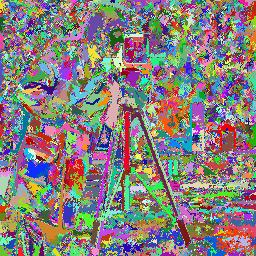

Demo Script
Flat zone computation

Flat zone extension using connected filter
Apply the alternating sequential filter by reconstruction with increasing sizes. They constitute a connected pyramid.


{kind=link}
{kind=link}
{kind=link}
Flat zone visualization and counting
These figures show the image simplification in a connected pyramid. Notice how the shapes are well preserved along the scale space. The number of flat zones at each level of the pyramid are computed to illustrate the flat zone number reduction.
>>> c_lab=mmlabelflat(c,mmsebox())
>>> d_lab=mmlabelflat(d,mmsebox())
>>> e_lab=mmlabelflat(e,mmsebox())
>>> print mmstats(c_lab,'max')
15509.0
>>> print mmstats(d_lab,'max')
11990.0
>>> print mmstats(e_lab,'max')
5648.0
>>> mmlblshow(c_lab)
>>> mmlblshow(d_lab)
>>> mmlblshow(e_lab)
|  |  |
|
| c_lab | d_lab |
{kind=link}
| e_lab |
{kind=link}
Flat zone inclusion property
In this experiment we select a particular flat zone, the flat zone to which the pixel (90,60) belongs, and display it at each level of the connected pyramid. Notice the flat zone inclusion property.
>>> c_v=c_lab[89,59]
>>> c_flat=mmcmp(c_lab,'==',c_v)
>>> d_v=d_lab[89,59]
>>> d_flat=mmcmp(d_lab,'==',d_v)
>>> e_v=e_lab[89,59]
>>> e_flat=mmcmp(e_lab,'==',e_v)
>>> mmshow(a,e_flat,d_flat,c_flat)
 |
|
| a,e_flat,d_flat,c_flat |